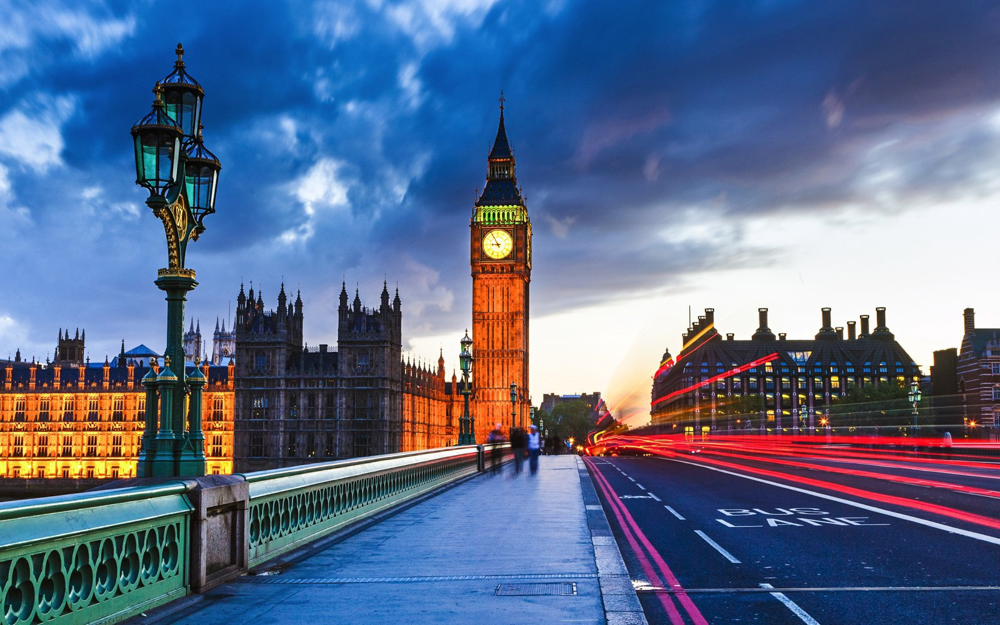

I have travelled to many different countries
France
Paris, France's capital, is a major European city and a global center for art, fashion, gastronomy and culture. Its 19th-century cityscape is crisscrossed by wide boulevards and the River Seine. Beyond such landmarks as the Eiffel Tower and the 12th-century, Gothic Notre-Dame cathedral, the city is known for its cafe culture and designer boutiques along the Rue du Faubourg Saint-Honoré

United States
The U.S. is a country of 50 states covering a vast swath of North America, with Alaska in the northwest and Hawaii extending the nation’s presence into the Pacific Ocean. Major Atlantic Coast cities are New York, a global finance and culture center, and capital Washington, DC. Midwestern metropolis Chicago is known for influential architecture and on the west coast, Los Angeles' Hollywood is famed for filmmaking.
London
London, the capital of England and the United Kingdom, is a 21st-century city with history stretching back to Roman times. At its centre stand the imposing Houses of Parliament, the iconic ‘Big Ben’ clock tower and Westminster Abbey, site of British monarch coronations. Across the Thames River, the London Eye observation wheel provides panoramic views of the South Bank cultural complex, and the entire city.
